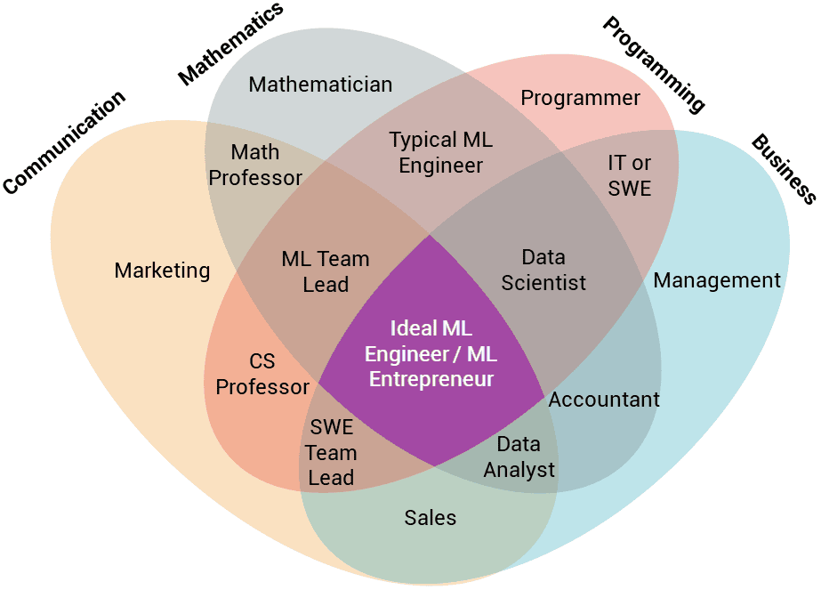

Роли в Data и ML
Чем отличаются Data Scientist, ML Engineer, Analyst, MLOps, Data Engineer и AI Engineer
Data Analyst (Аналитик данных)
Работает с уже собранными данными: дашборды, отчёты, SQL-запросы, визуализация (Tableau, Power BI, Looker). Фокус на понимании бизнес-метрик, A/B-тестах, воронках, когортах. Машинное обучение — редко или только простые модели (прогноз LTV, кластеризация).
Стек: SQL, Python/R, Excel, BI-инструменты, иногда базовый статистический анализ.
Data Scientist (Дата-сайентист)
Связка статистики, исследования и ML: эксперименты, прототипы моделей, feature engineering, оценка качества. Часто — исследовательская роль: «можно ли решить задачу данными и моделями?» Работа с табличными данными, временными рядами, рекомендациями, предиктивной аналитикой. Меньше внимания продакшену и пайплайнам.
Стек: Python (pandas, scikit-learn, statsmodels), SQL, Jupyter, иногда R. Знание матстата и метрик (AUC, precision/recall, RMSE).
ML Engineer / MLE (ML-инженер)
Модели в продакшен: обучение, пайплайны, API, мониторинг, переобучение. Сильный акцент на коде, воспроизводимости, тестах, масштабировании. Часто — классический ML (скоринг, рекомендации, поиск, фрод) и/или нейросети (NLP, CV, реклама). Пересекается с MLOps и backend.
Стек: Python, PyTorch/TensorFlow, scikit-learn, Docker, облака, SQL, иногда Spark/Kubernetes.
MLOps Engineer
Инфраструктура для ML: CI/CD моделей, версионирование данных и артефактов (DVC, MLflow), оркестрация обучения и инференса, мониторинг дрифта и качества. Упрощение жизни ML-команды: «модель обучили — она сама выкатилась и мониторится».
Стек: Kubernetes, Docker, Airflow/Prefect, MLflow/Kubeflow, облака (AWS SageMaker, GCP Vertex, Azure ML), мониторинг (Prometheus, Grafana).
Data Engineer (Инженер данных)
Сбор, хранение и доставка данных: пайплайны ETL/ELT, дата-озёра, хранилища, стриминг. Обеспечивает, чтобы у аналитиков и ML-инженеров были качественные и вовремя обновляемые данные. Машинное обучение — обычно не в зоне ответственности.
Стек: SQL, Python/Scala, Spark, Airflow, Kafka, облачные хранилища (S3, GCS), Snowflake/BigQuery/Redshift, dbt.
AI Engineer / Applied ML
Часто — синоним или подмножество ML Engineer с акцентом на нейросети и современные методы: LLM, RAG, агенты, эмбеддинги, тонкая настройка, инференс больших моделей. Работа с API (OpenAI, open-source моделями), оптимизация инференса, промпт-инжиниринг, иногда research-применение.
Стек: PyTorch, Hugging Face, LangChain/LlamaIndex, векторные БД, квантизация, vLLM/TRT и т.п.

Как роли соотносятся
- Analyst — ближе к бизнесу и отчётам; Data Scientist — к экспериментам и прототипам моделей; ML Engineer — к продакшену и коду.
- Data Engineer даёт «сырьё» (данные); ML Engineer и Data Scientist строят модели; MLOps — выкатывает и поддерживает их в проде.
- AI Engineer чаще всего — ML Engineer с фокусом на LLM/нейросети; в вакансиях названия часто смешиваются.
- В небольших командах один человек может закрывать несколько ролей (например, DS + MLE или DE + MLOps).